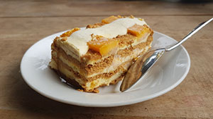

Courtesy of Obisdian Soul for the image.
"Mango float (Crema de Mangga) - Philippines" by Obsidian Soul is licensed under CC BY-SA 4.0 

 .
.
Ingredients
- Heavy Whipping Cream
- Sweetened Condensed Milk
- Graham Crackers
- Fresh, Ripe Mangoes
Recipe
- Cut mangoes into thin slices and set aside.
- In a bowl, combine cream and condensed milk.
- In a rectuangular dish, arrange 8-10 pieces of graham crackers.
- Spread the cream mixture and place the thinly sliced mangoes on top of the cream.
- Repeat steps until desired layers. Crackers, Cream, and Mangoes.
- Chill for at least 3 hours in the fridge before serving.